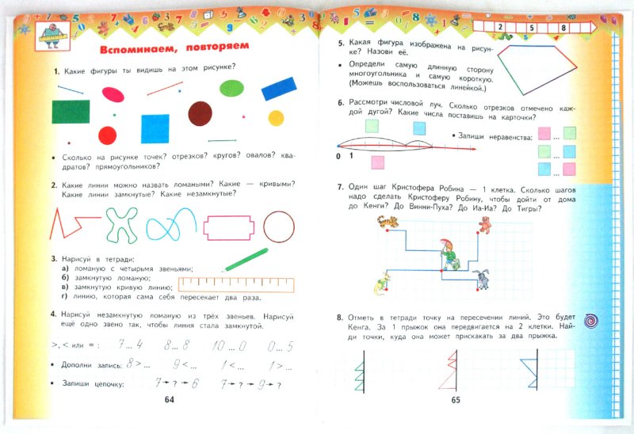
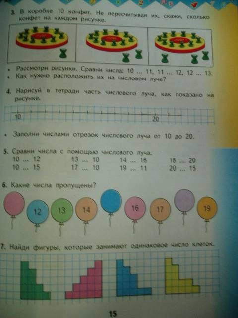
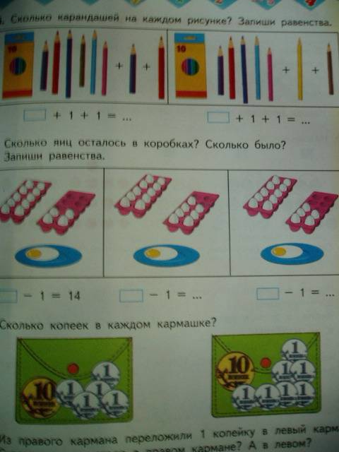
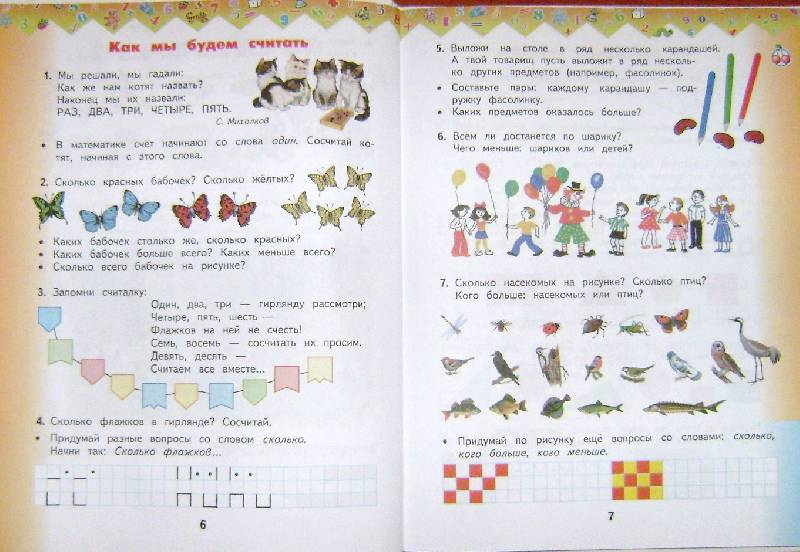
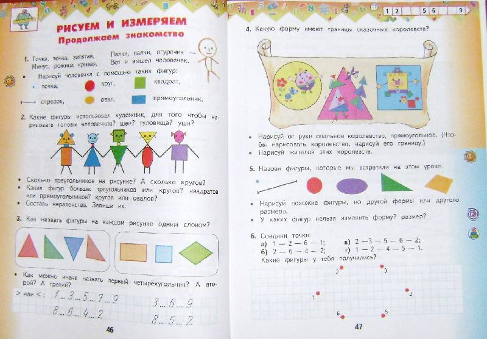

Учебник:

Содержание, как видим, хорошее. Вопрос только в задании 8, оно некорркетно - написано, что Кенга передвигается на две клетки (непонятно куда - по диагонали? по жирной черной линии?), а так же у средней фигуры точка находится не на пересечении линий, непонятно что с ней делать, ибо она в условия задачи не вписывается.



Взрослые, рисующие иллюстрации, равнодушные люди (классический элемент психоанализа по рту. Прямой рот=равнодушие).

... Но эти мерзкие градиенты!